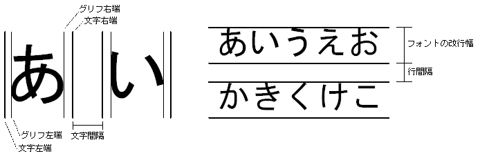

#include <nnsys/g2d/g2d_TextCanvas.h>
void NNS_G2dTextCanvasInit(
NNSG2dTextCanvas* pTxn,
const NNSG2dCharCanvas* pCC,
const NNSG2dFont* pFont,
int hSpace,
int vSpace
);| pTxn | [IN] Pointer to the TextCanvas to build |
| pCC | [IN] Pointer to the built CharCanvas |
| pFont | [IN]Pointer to the built font |
| hSpace | [IN] Text character interval (in pixels) |
| vSpace | [IN] Line interval (in pixels) |
None.
Initializes the structure NNS_G2dTextCanvasInit.
pCC specifies the CharCanvas where text-characters will be drawn. The text-string drawings to TextCanvas ultimately become the text-character drawings to pCC.
pFont specifies the font being used for drawing the text characters.
The character spacing value hSpace is the distance from the right edge of the previous text character to the left edge of the next text character. There is a defined space to the left and right of the glyph of each text character; therefore, the distance between the left and right edge of a text character is not the same as the distance between the left and right edge of the glyph. (See the figure below.)
The line spacing value vSpace is the distance between the bottom of the previous line and the top of the next line. The height from the top to the bottom on a single line varies depending on the line-feed width of the font being used, so the value is not always the same as the height of the line as it appears to the eye. Distance between bottom of previous line and top of next line = font's line-feed width + line spacing. See the figure below.

05/25/2005 Initial version.